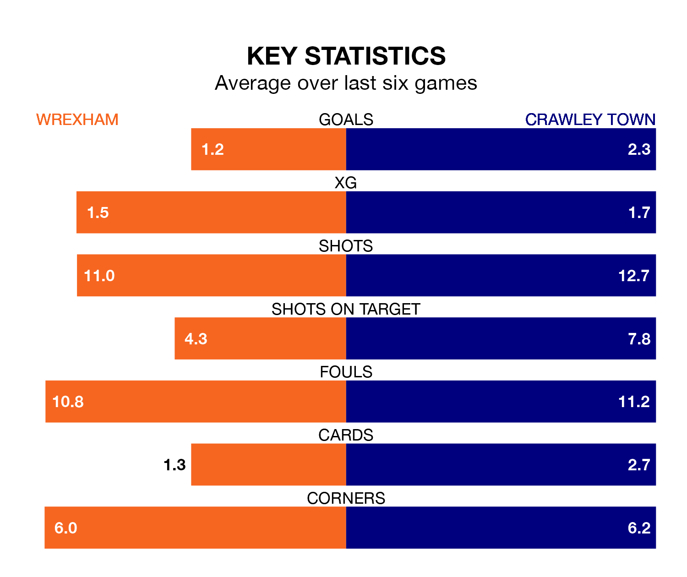

Wrexham are heavy favourites to keep all three points at home in Tuesday's late kick-off against Crawley Town.
The Dragons, who sit second in EFL League Two with 42 games played, are priced at 1.4 to seal victory at the Racecourse Ground.
Sitting five places and 11 points behind them in the table, Crawley are 5.6 to win with *Betting Company*, while the draw is at 4.5.
With 74 goals in 42 games so far this season, Wrexham are scoring more than average in the league with 1.8 goals per game. And they are conceding fewer than average, letting in 50 goals at a rate of 1.2 per game.
Crawley are also above average scorers, with 1.6 goals per game, compared to a league average of 1.5. They have conceded 1.4 goals per game.
In Paul Philip Mullin, the Dragons have one of the league's most on-form strikers so far this season. He has notched 19 goals in 34 appearances, to sit fourth in the scoring charts.
His goal rate of one every 142 minutes is quicker than that of Danilo Orsi-Dadamo, Town's top scorer with a goal every 205 minutes, and a total of 17 goals in 40 games.
The home team are in mixed form in EFL League Two, with three wins and a draw from their last six games.
With four wins and a draw over that period, the Red Devils' form is better – they have taken 13 points from 18, compared to Wrexham's 10.
Wrexham's last match was on Saturday, a 2-1 win against Colchester United, with Max George Cleworth and Mullin getting the goals for the Dragons.
Crawley beat Mansfield Town 4-1 last time out, also on Saturday, with Kellan Gordon, Klaidi Lolos, Nicholas Tsaroulla and Orsi-Dadamo on the scoresheet.
Updated: 11:20 (UTC), 09/04/24